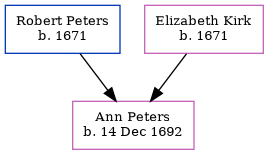

Ann Peters 1692 -
[ Home ] | [ Calendar ] | [ Surnames Index ] | [ Census Index ] | [ Family History ]The younger of 2 children of Robert Peters and Elizabeth Kirk, Ann Peters, the seven times great-aunt of Nigel Horne, was born in Rye, Sussex, England on Dec 14, 16921 and baptized there on Dec 24, 1692.
Parents
- Robert was born in 1671
- Elizabeth was born in 1671
Citations
- England & Wales Christening Records, 1530-1906 Online publication - Provo, UT, USA: Ancestry.com Operations Inc, 2008.Original data - Genealogical Society of Utah. British Isles Vital Records Index, 2nd Edition. Salt Lake City, Utah: Intellectual Reserve, copyright 2002. Used by permission.Original dat
Family Tree
Generated by ged2site. Last updated on Jun 11, 2024